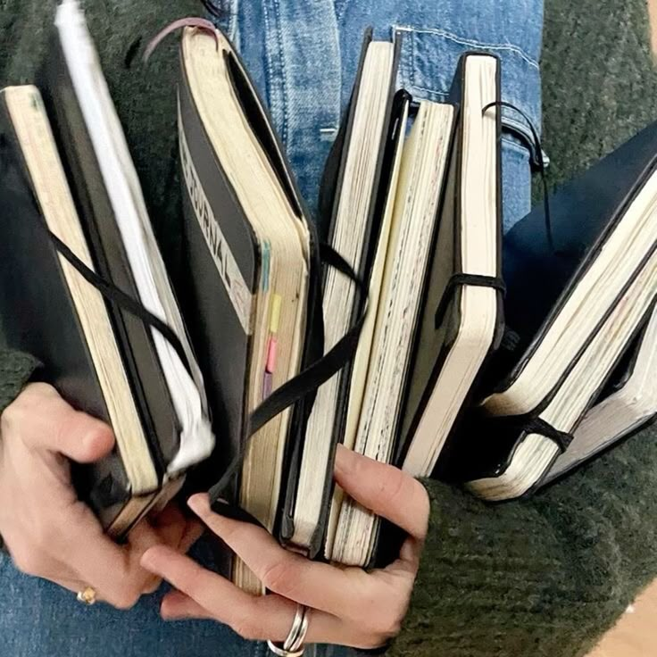
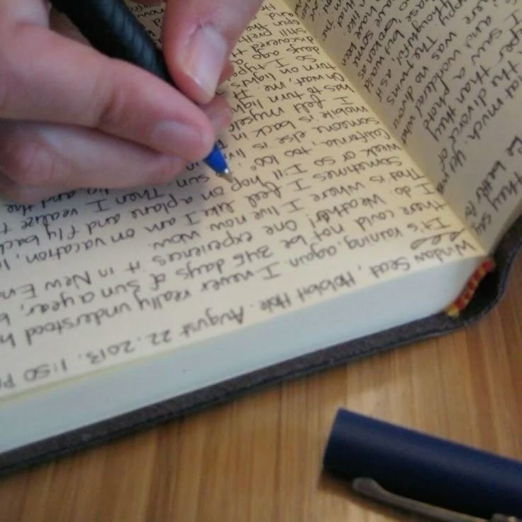
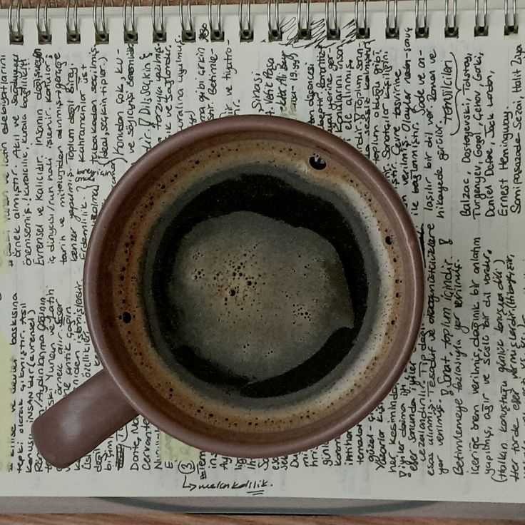
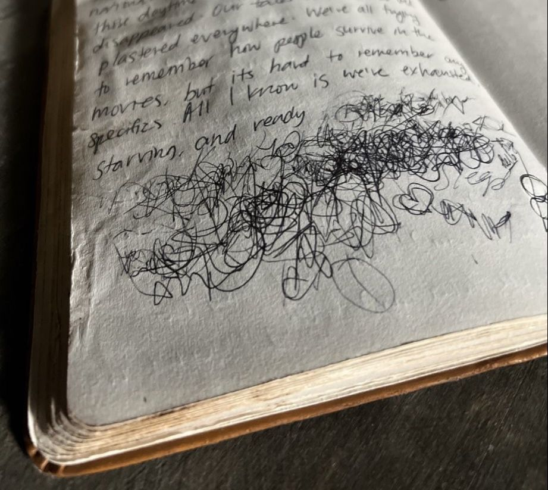
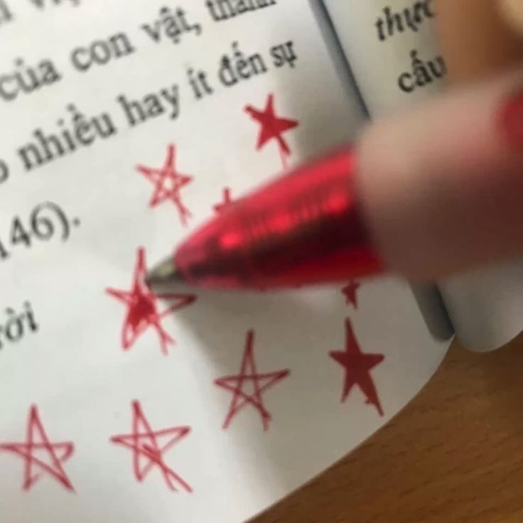
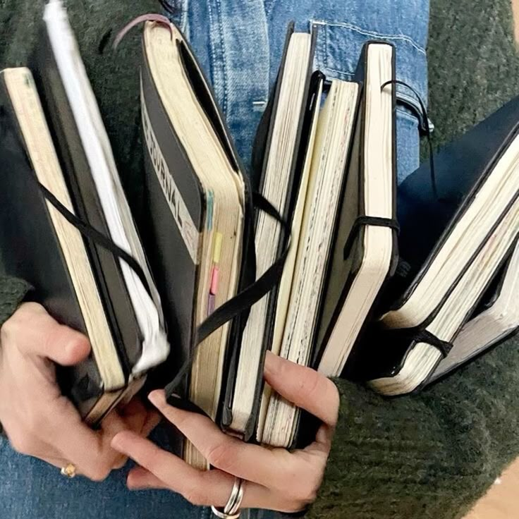
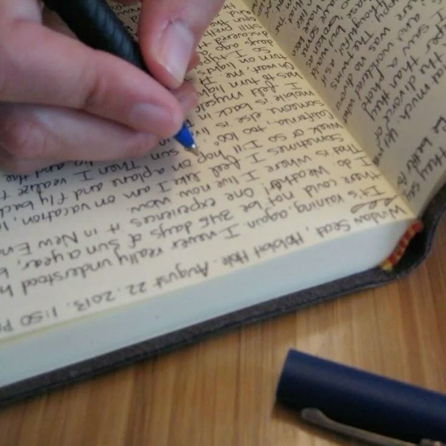
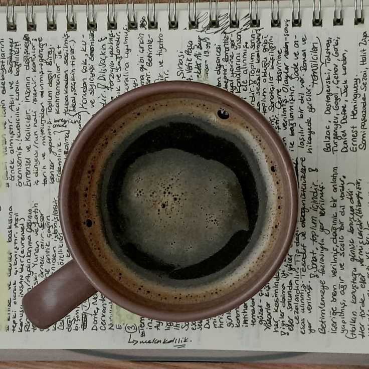
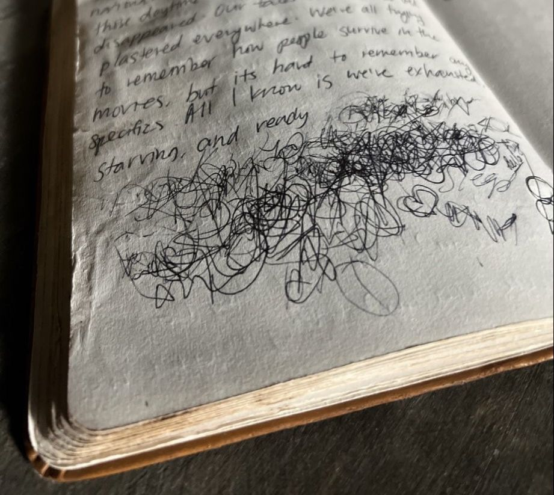
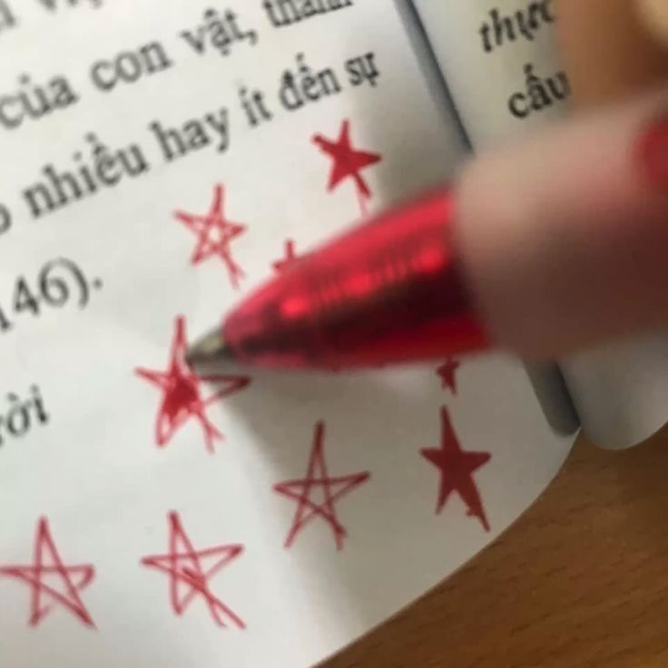

 2019 - Notepad
2019 - Notepad
Querida Jimena de 12 años:
Han pasado muchas cosas en los últimos 6 años. Si haces los cálculos, te darás cuenta de que ya has terminado la secundaria y la preparatoria.
Ya no es 2019, ya no ves videos de Gacha Life ni de los polinesios, ya no tienes tu IPhone SE, ya no eres amiga de Carol ni de nadie del rancho.
Tus compañeras de primaria, la mayoría, están casadas y con hijos, fueron muy pocos las que no.
Luz Acevedo sí llegó a la universidad y dejó a Julio.
Luz Corona se salió de la secundaria porque su hermana se accidentó.
Carol se fue a Irapuato y perdió la secundaria, aunque se recupero y ahora estudia para maestra, creo.
Esos 6 años fueron un total caos.
¿Imaginabas, a los 12, que tan sólo 2 años después padecerías anorexia? No, ¿verdad?
Lamentablemente, esa fue tu mayor condena hasta la actualidad.
Tú y yo sabemos que no eres una santa a esa edad, que hiciste cosas malas y las seguirás haciendo, pero tranquila, pronto conocerás a tu maestra de secundaria y te cambiará la vida.
A los 15 amarás tanto a Dios que tu vida irá en ascenso. Pero ojo, convertirte completamente al catolicismo no solucionará tus problemas, sin embargo, el dolor se hará mucho más manejable.
Quizás en otro momento podamos hablar con más calma y detalle de estos 6 años, sólo te puedo decir que no, no estudiaste veterinaria ni diseño gráfico: entraste a una ingeniería en tecnologías de la información e innovación digital. Siempre has sido inteligente, de 10 y 9, con desempeño increíble; no obstante, a los 18 llegará una materia que te dará en la torre y te hará sentir un fracaso, aunque tranquila, la vida no se acabará.
Ni a los 14 con anorexia, ni a los 13 en pandemia ni a los 15 cuando manzana no te quiso.
A los 12 te creías muy madura, pero a los 18 te darás cuenta de que sigues siendo una niña.
Yo nunca te volveré a ver, pero tú a mí sí.
Resiste. Te quiero. Me quiero.